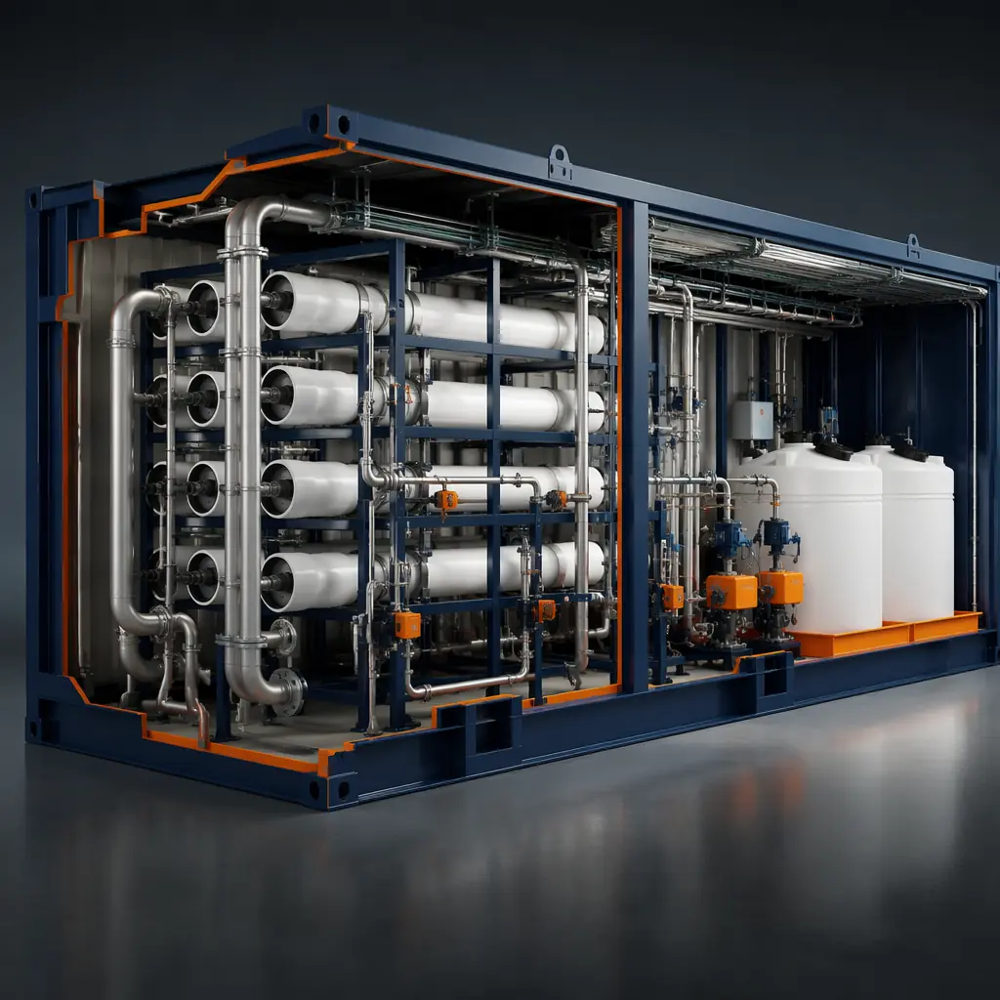
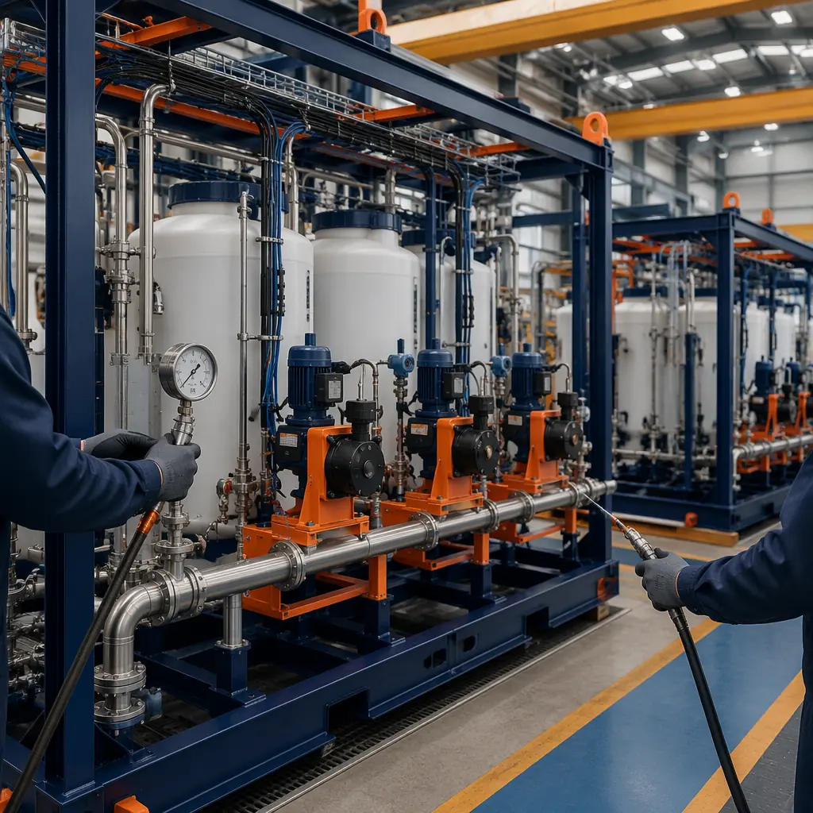
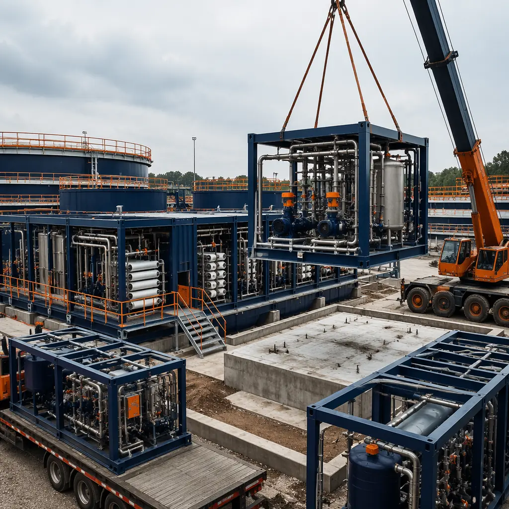

The American Society of Civil Engineers' 2025 Infrastructure Report Card assigns US water infrastructure a C– grade, with an estimated $109 billion annual investment gap between current spending and the level needed to maintain safe drinking water and wastewater treatment standards. The US Environmental Protection Agency's 2023 Drinking Water Infrastructure Needs Survey identified $625 billion in required capital improvements over the next 20 years — and that assessment was completed before the EPA's 2024 enforceable National Primary Drinking Water Regulation for PFAS (PFOA/PFOS maximum contaminant level of 4.0 parts per trillion) added an estimated $45–60 billion in treatment plant upgrades to the national infrastructure backlog. A conventional water treatment plant expansion takes 36–60 months from design through commissioning, with each month of delay extending the period that a community relies on aging infrastructure. Modular prefabricated construction compresses the delivery timeline to 18–30 months by manufacturing process modules — chemical feed systems, membrane filtration skids, laboratory buildings, and control rooms — as factory-built units while site civil works (tanks, basins, pipe galleries) proceed concurrently. For a municipality upgrading a 10 MGD (million gallons per day) treatment plant at a cost of $35 million through State Revolving Fund financing at 2.5%, compressing the construction period by 18 months saves approximately $2.6 million in total project costs when factoring reduced general conditions, avoided construction-phase escalation, and earlier commissioning revenue from connection fees. The same factory-precision approach that defines modular cleanroom and semiconductor facility construction applies directly to the process-critical environments in water treatment.

Why Water Treatment Construction Lags — And How Modular Addresses the Four Bottlenecks
Conventional water and wastewater treatment plant construction faces four structural bottlenecks that modular delivery directly addresses:
- Sequential trade dependency creates a single-threaded critical path. A conventional treatment plant is built in phases: site grading and civil works (8–12 months), concrete tanks and basins (12–18 months), process equipment installation (10–14 months), electrical and instrumentation (8–12 months), and commissioning (4–8 months). Each phase depends on the previous phase completing before the next can begin. The result is a 42–64 month construction schedule where any delay in the concrete phase cascades through every subsequent trade — and concrete curing cannot be accelerated in cold-weather regions where winter construction adds 3–5 months of downtime annually. Modular construction decouples these phases: while site civil works proceed (tanks, basins, foundations), process modules are manufactured concurrently in the factory — chemical feed skids with pre-installed metering pumps and day tanks, membrane filtration modules with pre-plumbed pressure vessels and CIP (clean-in-place) connections, and laboratory buildings with pre-installed fume hoods, casework, and analytical instrumentation rough-in. When the modules arrive on site, they are set onto prepared foundations and connected to tankage and utilities through pre-engineered interface points — compressing what would be 10–14 months of sequential process equipment and electrical installation into 6–10 weeks of module setting and interconnections. For other facility types where concurrent production compresses schedules, see our analysis of modular industrial facility delivery.
- Process piping and instrumentation density overwhelms field labor productivity. A 10 MGD membrane filtration plant contains approximately 8,000 linear feet of process piping (raw water, filtered water, backwash, chemical feed, compressed air, CIP supply/return) and 2,500 instrument connections (flow meters, pressure transmitters, turbidity analyzers, chlorine residual monitors, pH probes). In conventional construction, this piping and instrumentation is installed in the field by pipefitters and instrument technicians working in partially completed buildings with limited access, weather exposure, and the productivity losses inherent in field construction (estimated at 35–45% productive time vs. the 75–85% productive time achievable in a factory). Modular construction shifts this piping and instrumentation work into the factory, where process modules are built with pipe racks, instrument stands, and cable trays pre-installed on the module's structural steel frame. The factory also enables pressure testing of process piping (hydrostatic test at 1.5× design pressure) and instrument loop-checking (4–20 mA signal verification from transmitter to PLC input) to occur before the module leaves the factory — eliminating 4–6 weeks of field commissioning that conventionally occurs after the building is enclosed.
- Corrosion protection requirements create weather-dependent construction windows. Wastewater treatment environments are classified as ISO 12944 C5 (very high corrosivity) or C5-M (marine industrial), requiring multi-coat epoxy and polyurethane coating systems on structural steel and concrete that demand specific temperature and humidity conditions for application and curing (typically 50–90°F, less than 85% relative humidity, with dew point at least 5°F below surface temperature). In conventional construction, these coating application windows constrain steel erection and concrete finishing to favorable weather seasons — adding 3–6 months of schedule to projects in cold or humid climates. Factory-applied corrosion protection eliminates weather dependency: structural steel receives its coating system in a controlled factory environment, concrete module components (precast wall panels, equipment pads) are cast and cured indoors, and the entire module is shipped to site with corrosion protection fully cured and documented. For facilities with similarly demanding environmental requirements, see our guide to modular coastal and flood-resistant construction.
- Regulatory permitting uncertainty during construction creates compliance risk. Water treatment plants operate under National Pollutant Discharge Elimination System (NPDES) permits that specify effluent limits for BOD, TSS, nitrogen, phosphorus, and an expanding list of constituents of emerging concern (PFAS, 1,4-dioxane, microplastics). During construction, if regulatory requirements change — and the EPA's 2024 PFAS rule is unlikely to be the last new drinking water standard — a conventionally built plant that is 60% complete may require design changes that cascade through partially completed process piping and electrical systems. Modular construction's design-finalization-before-production model ensures that process equipment, instrumentation, and control systems are specified and installed to the regulatory requirements in effect when the modules enter production — reducing change-order exposure during construction. If a regulatory change occurs during module fabrication, the factory environment enables faster incorporation of design changes than field construction because materials, tools, and skilled labor are co-located rather than dispersed across a large construction site. For broader treatment of regulatory compliance in modular construction, see our guide to permitting and zoning for modular projects.

Treatment Process Modules — What Gets Built in the Factory
The modular approach to water treatment plant construction divides the facility into process-function modules that can be manufactured independently and connected on site:
Chemical Feed and Storage Modules
Chemical feed systems — coagulant (aluminum sulfate or ferric chloride), flocculant polymer, pH adjustment (lime or caustic soda), disinfectant (sodium hypochlorite), and corrosion inhibitor (orthophosphate or zinc) — represent the highest piping density and most stringent secondary containment requirements in a treatment plant. Each chemical requires dedicated day tanks (typically HDPE or FRP, 500–2,000 gallon capacity), metering pumps (diaphragm or peristaltic, 0.5–50 GPH with 4–20 mA flow pacing from plant SCADA), and secondary containment with leak detection sensors connected to the plant alarm system. In conventional construction, the chemical feed room is built as a cast-in-place concrete structure with acid-resistant coatings, then the chemical feed equipment is installed sequentially by process piping, mechanical, and electrical contractors — a 12–16 week installation sequence. In modular construction, the chemical feed module arrives as a completed, pre-commissioned unit: the day tanks, metering pumps, containment curbs with epoxy lining, leak detection sensors, ventilation system, and eyewash/safety shower are all installed, plumbed, wired, and tested in the factory. On site, the module requires only connections to the bulk chemical storage tanks (exterior to the module), process water piping, and plant SCADA network — reducing on-site installation from 12–16 weeks to 2–3 weeks. The same approach serves modular pharmaceutical GMP facilities, where chemical handling and containment requirements are similarly demanding.
Membrane Filtration and Process Equipment Enclosures
Membrane filtration — whether ultrafiltration (UF) for surface water treatment, reverse osmosis (RO) for brackish water desalination, or membrane bioreactors (MBR) for wastewater — requires climate-controlled enclosures to prevent membrane freezing, maintain consistent permeate flux, and provide clean access for membrane cleaning and replacement. These enclosures are typically 30–60 ft wide with 25–30 ft clear interior height to accommodate vertical membrane racks and overhead bridge crane access. A factory-built membrane enclosure module arrives with the membrane racks, permeate and concentrate headers, CIP system connections, and bridge crane runway beams pre-installed — eliminating 8–12 weeks of structural steel erection and process piping installation on site. The enclosure's HVAC system (designed for 50–80°F, 30–70% RH) is factory-installed and tested, ensuring that the membrane environment is conditioned before the modules arrive — critical for membrane elements that can be damaged by freezing temperatures during winter construction.
Laboratory and Control Room Buildings
Water quality laboratories require precise environmental control (temperature stability ±2°F for analytical balance rooms, fume hood face velocity 80–120 FPM at design sash opening), dedicated electrical circuits for analytical instruments (ICP-MS, GC-MS, ion chromatography), and reagent-grade water distribution from centralized polishing systems. Control rooms require 24/7/365 HVAC redundancy, raised-access flooring for SCADA cabling, and video wall mounting structures for plant-wide monitoring displays. Modular construction delivers these buildings as factory-completed modules with laboratory casework, fume hoods, instrument rough-in, and control room consoles pre-installed — compressing the 16–24 week on-site fit-out sequence to 8–12 weeks of factory production. The laboratory module arrives with all plumbing (reagent water, compressed air, natural gas, vacuum) and electrical (120V clean power, 208V instrument power, UPS-backed circuits) pre-installed and labeled — eliminating the field coordination errors that cause 60–70% of laboratory construction punch-list items in conventional builds, a quality advantage detailed in our analysis of modular factory QC systems.

Cost Structure — Modular vs. Conventional Water Treatment Plant Delivery
| Cost Category | Conventional (10 MGD Plant) | Modular (10 MGD Plant) |
|---|---|---|
| Civil works (tanks, basins, foundations) | $12–15M | $12–15M (identical scope) |
| Process equipment modules | $8–10M (field-installed) | $6.5–8M (factory-built) |
| Process piping & instrumentation | $5–7M | $3.5–5M (factory pre-installed) |
| Buildings — lab, control room, chemical feed | $4–5.5M | $3–4M (factory-completed) |
| Module transportation & setting | N/A | $600–900K |
| General conditions (reduced duration) | 48 months × $60K = $2.9M | 30 months × $60K = $1.8M |
| Total Project Cost Range | $31.9–40.4M | $27.4–34.7M |
The 14–15% cost reduction is driven by factory labor productivity on process piping and instrumentation (the highest-cost and most field-inefficient scope), reduced general conditions from the compressed schedule, and elimination of weather-related construction delays. These savings compound for multi-site programs — a regional water authority building three treatment plants can capture additional 8–12% savings through production-line repeatability as the factory workforce's productivity improves across successive modules. For a detailed breakdown of modular construction costs, see our 2026 cost per square foot guide and our developer's ROI analysis for modular construction.

Is Modular Right for Your Water Treatment Project?
Modular construction delivers the strongest value proposition for water and wastewater treatment projects where: the plant capacity is between 1 and 30 MGD, the treatment process includes membrane filtration or advanced oxidation that benefits from factory-integrated process equipment, the project site has weather or access constraints that inflate conventional construction costs, and the project schedule is driven by regulatory compliance deadlines or consent decree requirements that impose financial penalties for delay. For large-diameter pipeline projects, deep tunnel conveyance systems, and treatment plants exceeding 50 MGD — projects dominated by civil works rather than process equipment — conventional construction remains the appropriate delivery method. But for the $625 billion in treatment plant upgrades that the EPA has identified as needed over the next 20 years — and for the growing number of communities where PFAS compliance deadlines are compressing already-tight construction schedules — modular delivery offers a timeline and cost proposition that conventional water treatment plant construction cannot match. See our guide to construction tax benefits and depreciation for the financial incentives available for water infrastructure investment.